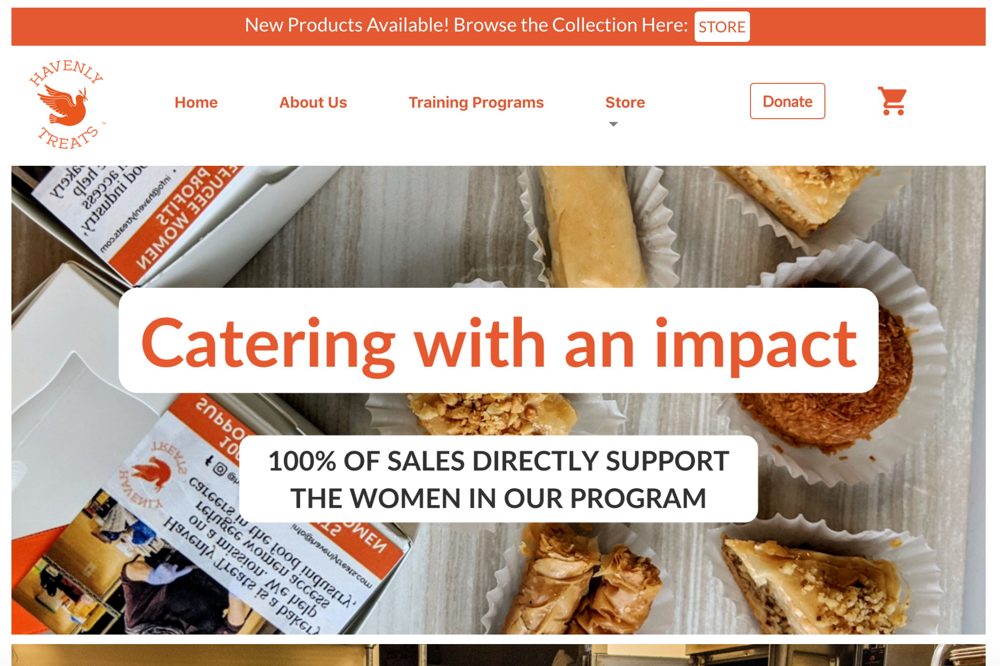
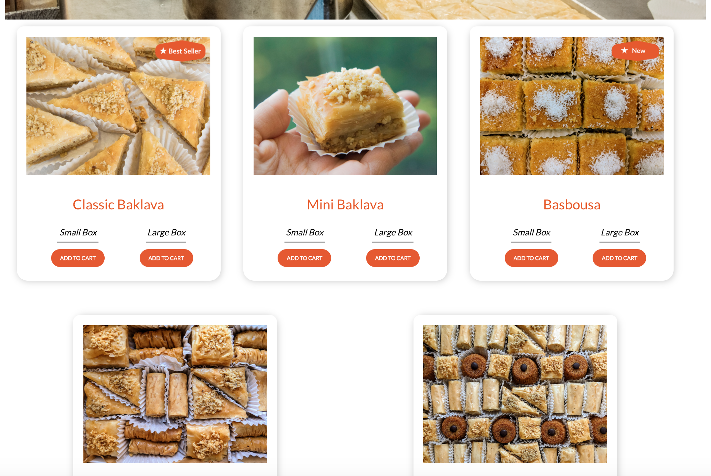

JENNIFER JIMENEZ


Schedule Pro is a web app that takes a user’s weekly non-negotiable scheduled tasks (e.g. class, work) as well as tasks that can be completed any time (e.g. going to the store) and optimizes their route based on distance. Distance is calculated using data from Google Maps Distance Matrix API. The web app was created using the Flask microframework (incorporates Python, HTML/CSS, Jinja, and SQL).
Havenly Treats is a non-profit organization run for and by refugee women. As an intern, I helped them develop their first website in early 2020. The website was built using ReactJS.
 